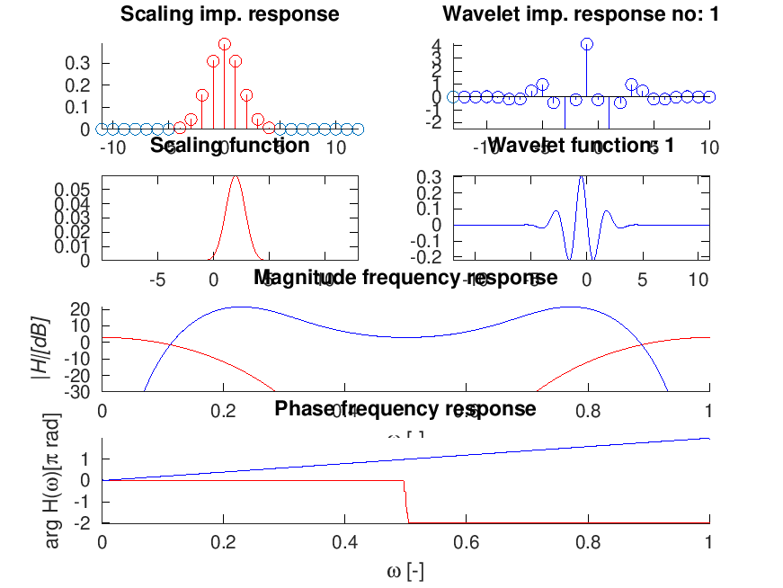
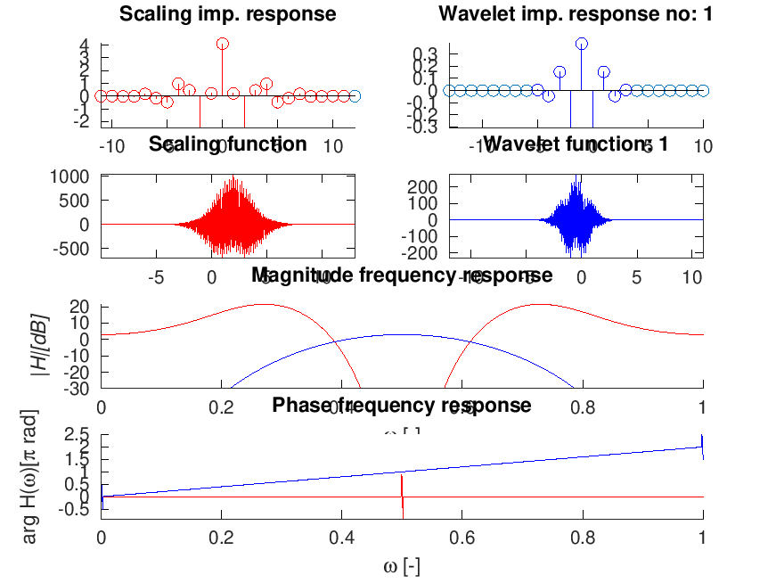

wfiltinfo(w);
| w | Basic wavelet filterbank. |
wfiltinfo(w) plots impulse responses, frequency responses and approximation of the scaling and of the wavelet function(s) associated with the wavelet filters defined by w in a single figure. Format of w is the same as in fwt.
Optionally it is possible to define scaling of the y axis of the frequency seponses. Supported are:
Details of the 'syn:spline8:8' wavelet filters (see wfilt_spline):
wfiltinfo('syn:spline8:8');
This code produces the following output:
|Scaling imp. response Wavelet imp. response no: 1
| F 4 +|+ F
0.3 +|+ F%F 3 +|+ F % F
0.1 +|------------------------- -0 &|-------------------------
0 &&&&&&&&&&&&&&&&&&&&&&&&&& -2 +-++ + % +% + +
-|--Scaling function------| |-Wavelet function: 1----|
0.05 +|+ + +*** + ++-+| 0.3 +|+ + ** + +++|
0.04 +|+ + +* * + ++-+| 0.2 +|+ + * ** * + +++|
0.02 +|------------------------| -0.0 *|------------------------|
0 ************ *********** -0.2 +-+ + **** + +++
-5 0 5 10 -10 -5 0 5 10
| Magnitude frequency response
20 +|+ ############### ###############
|H|[dB]0 *|------------------------------------------------------------
-20 +-+### + ******* + + ******* + ### +
0 0.2 0.4 0.6 0.8 1
| Phase frequency response
| #####################
1 #|#######################################
-1 +|------------------------------------------------------------
-2 +-+ + + *******************************
0 0.2 0.4 0.6 0.8 1

Details of the 'ana:spline8:8' wavelet filters:
wfiltinfo('ana:spline8:8');
This code produces the following output:
|Scaling imp. response Wavelet imp. response no: 1
4 +|+ F 0.3 +|+ F
3 +|+ F % F 0.2 +|+ F % F
-0 &|------------------------- -0.0 &|-------------------------
-2 +++ + % + % + + -0.2 +-++ + % % + +
-|--Scaling function------| |-Wavelet function: 1----|
1000 +|+ + +*** + ++-+| 200 +|+ + ** + +++|
500 +|+ + ******* ++-+| 100 +|+ + ****** + +++|
0 *|------------------------| -100 *|------------------------|
-500 +-+ + *****+ ++-+ -200 +-+ + **** + +++
-5 0 5 10 -10 -5 0 5 10
| Magnitude frequency response
20 +|+ *************** ***************
|H|[dB]0 *|------------------------------------------------------------
-20 +-+ ####### +*** ***+ ####### +
0 0.2 0.4 0.6 0.8 1
| Phase frequency response
2.5 +|+ ###
1.5 #|+ ################################### #
0.5 #|------------------------------------------------------------
-0.5 #-+ + + * + + +
0 0.2 0.4 0.6 0.8 1
